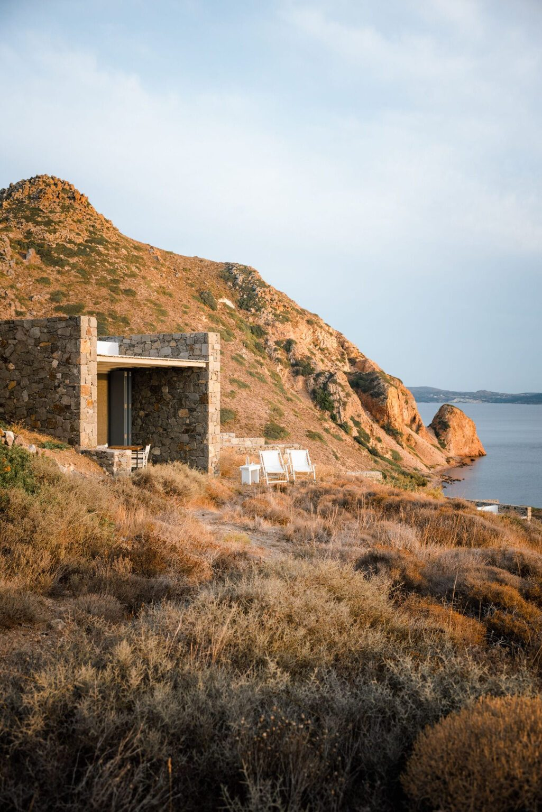
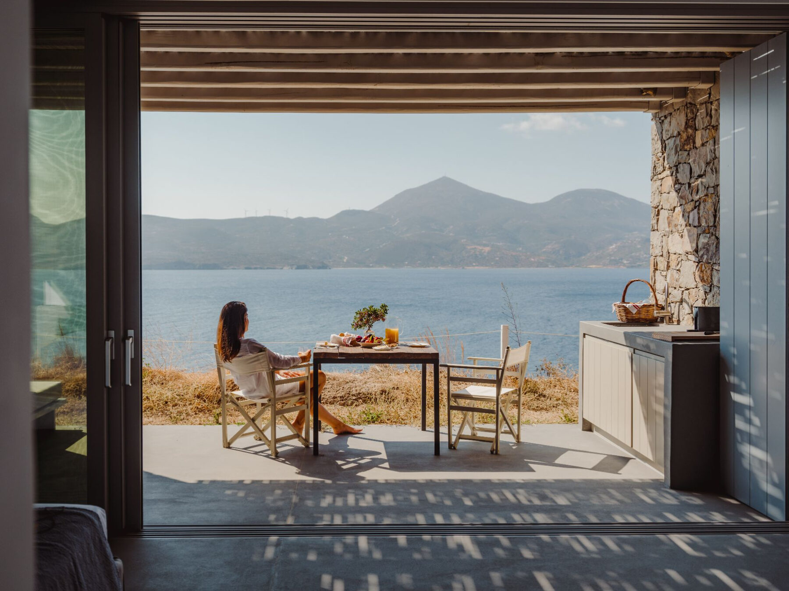
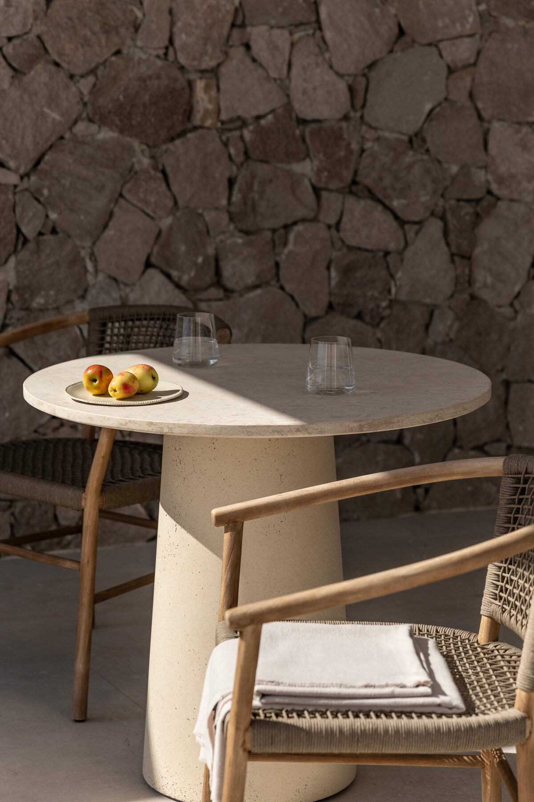
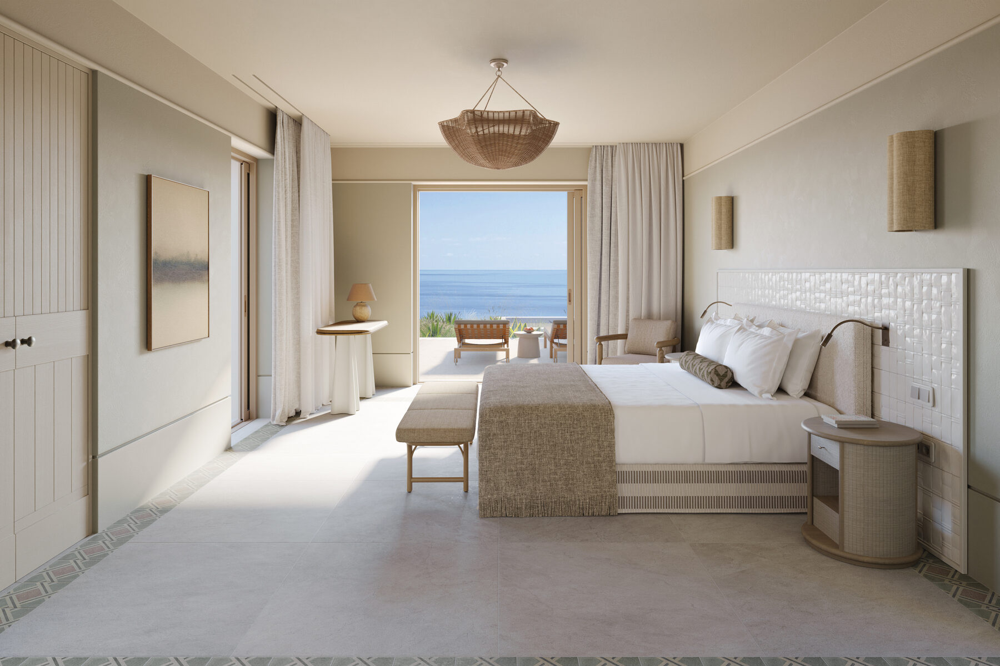
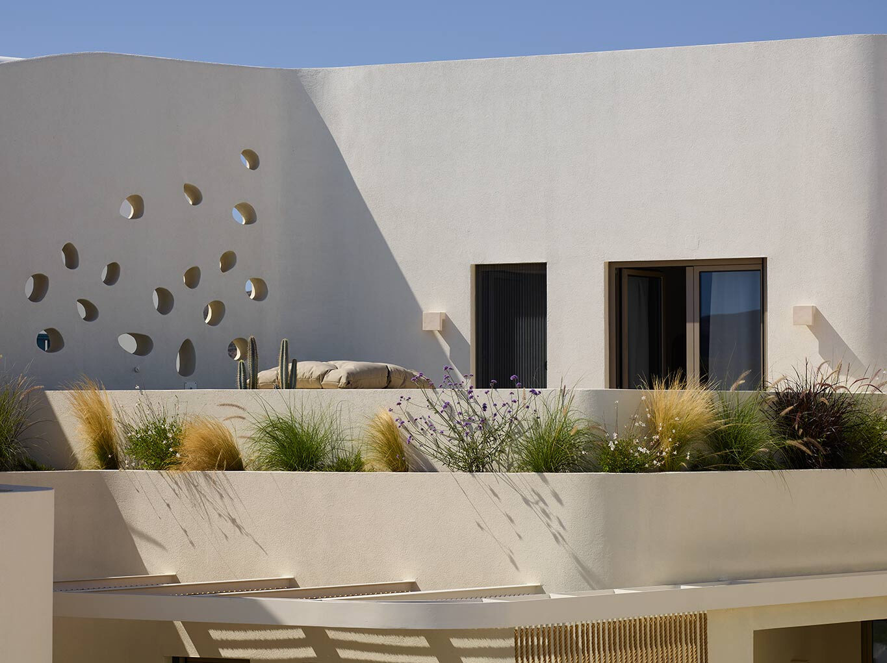
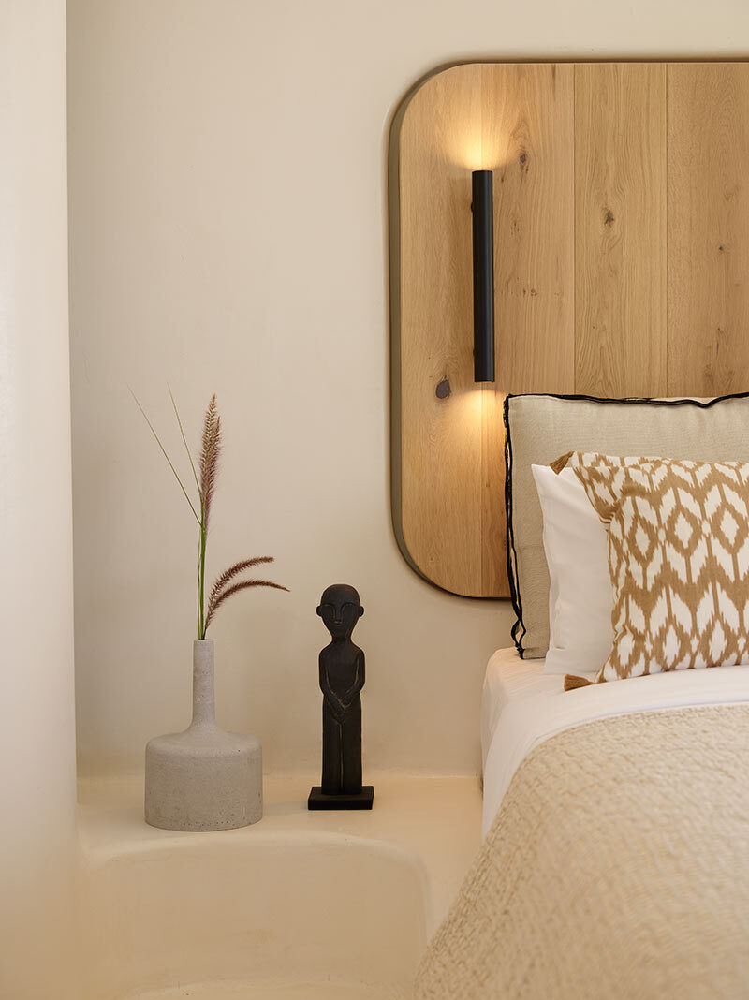
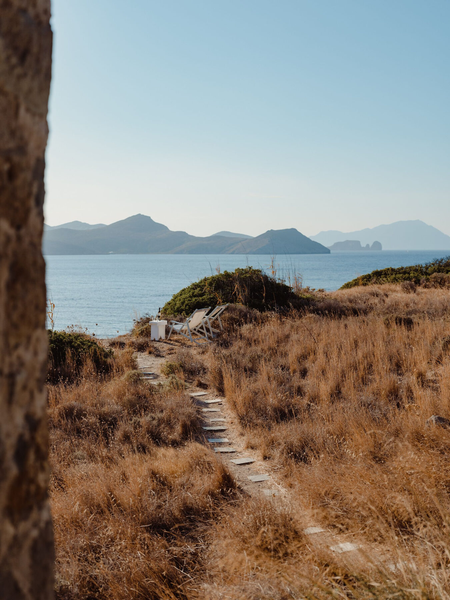

The Greece Collection · Issue No. 01
06Nature's masterpiece in the Cyclades.
Experience Milos' iconic lunar landscape before the crowds arrive.
Discover remote coves and dramatic coastlines that are difficult to reach any other way.
Stay in a traditional boat house and experience one of the Cyclades' most authentic neighboring islands.
The island's most unforgettable day on the water.
Renting a car or ATV is essential for exploring Milos. Many of the island's best beaches, villages, and viewpoints are spread across the coastline, making the freedom to explore at your own pace part of the experience. I also arrange private boat transfers and private helicopter transfers, through my partnership with Hoper, for travelers connecting Milos with other islands in the Cyclades.
Milos feels unlike anywhere else in the Cyclades. Every beach looks different, every coastline surprises you, and the landscape shifts from volcanic cliffs to white rock formations and hidden coves. If you love spending your days outdoors, there's no better island to explore.
The island's most charming village with boutique hotels, waterfront restaurants, and easy access to beaches.
Traditional fishermen's houses and postcard-worthy waterfront scenery.
Hilltop village with sunset views, local boutiques, and authentic tavernas.

Above the Aegean
Perched above the sea, Skinopi Lodge blends traditional architecture with modern simplicity. Every detail feels intentional, creating one of Milos' most unique boutique stays for travelers seeking authenticity over excess.
Head into Klima before sunset. It's only a few minutes away and one of the best places on the island to wander before dinner.
Book a boat for the next morning. Skinopi is perfectly positioned for exploring Milos' western coastline before the crowds arrive.
Spend an evening at the lodge. The quiet setting and uninterrupted sea views are reason enough not to leave every night.
Skinopi Lodge isn't trying to compete with Milos' dramatic landscapes — it complements them. The architecture blends seamlessly into the hillside, the pace is intentionally slow, and the setting makes it one of those rare hotels where returning each afternoon becomes part of the experience.


A private island feeling
One of Milos' newest luxury hotels, Erema feels more like a private estate than a traditional resort. Contemporary Cycladic architecture, expansive suites, and a secluded setting create a stay that's peaceful, design-forward, and just minutes from some of the island's best beaches.
Stay at least three nights. Milos deserves more than a quick stop, and Erema is best enjoyed at a slower pace.
Pair your stay with a private boat day. Seeing Milos from the water completely changes the experience, and Erema makes the perfect base.
Plan beach time into your itinerary. While the hotel feels wonderfully secluded, some of Milos' best beaches are only a short drive away.
Erema feels refreshingly understated. If you're looking for contemporary design, genuine privacy, and a slower side of Milos, it's one of the island's strongest luxury stays.


Seaside elegance
White Pebble Suites pairs contemporary Cycladic design with one of Milos' best locations. Perched above the waterfront village of Pollonia, it offers understated luxury, personalized service, and easy walking access to the island's best restaurants, cafés, and seaside promenade.
Walk into Pollonia every evening. Some of Milos' best restaurants are just a short stroll away, making the village part of the experience.
Take the ferry to Kimolos for the day. Pollonia is the departure point, and it's one of the easiest day trips in the Cyclades.
Save an afternoon for the waterfront. Grab a drink, wander the promenade, and settle into the slower rhythm that makes Pollonia so appealing.
White Pebble Suites offers a polished boutique experience in one of Milos' most charming villages. If you're looking for contemporary luxury with easy access to Pollonia's restaurants and waterfront, it's an excellent base for exploring the island.

How I'd spend three unforgettable days exploring Greece's most spectacular island landscapes.

Check into your hotel before spending the afternoon swimming in Pollonia. Enjoy a relaxed waterfront lunch at Alkis, explore the village, and end your evening with sunset cocktails overlooking the Aegean.
Set out early for Sarakiniko before boarding a private boat to Kleftiko and the island's hidden sea caves. Spend the afternoon swimming in crystal-clear water before returning for a relaxed dinner by the sea at your hotel.
Visit Plaka before exploring Klima's colorful fishermen's houses. Spend your final afternoon discovering one last hidden western beach before enjoying a long farewell dinner overlooking the water at O'Hamos.
Milos rewards curiosity. Leave time to turn down roads you hadn't planned to take — you'll often discover your favorite beach by accident.